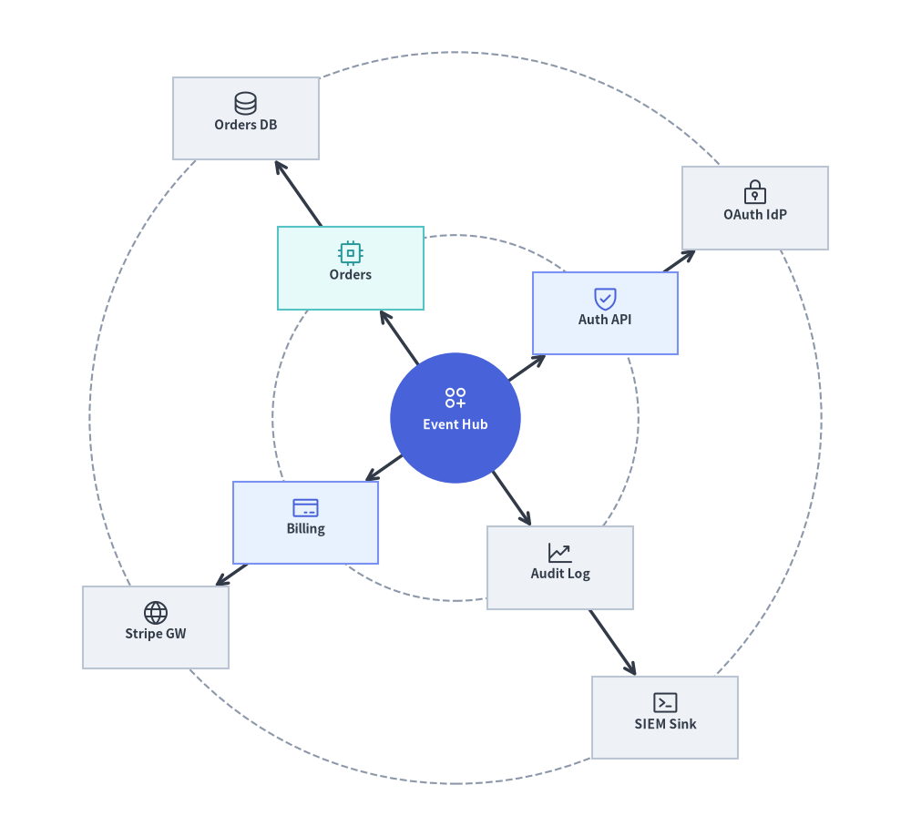
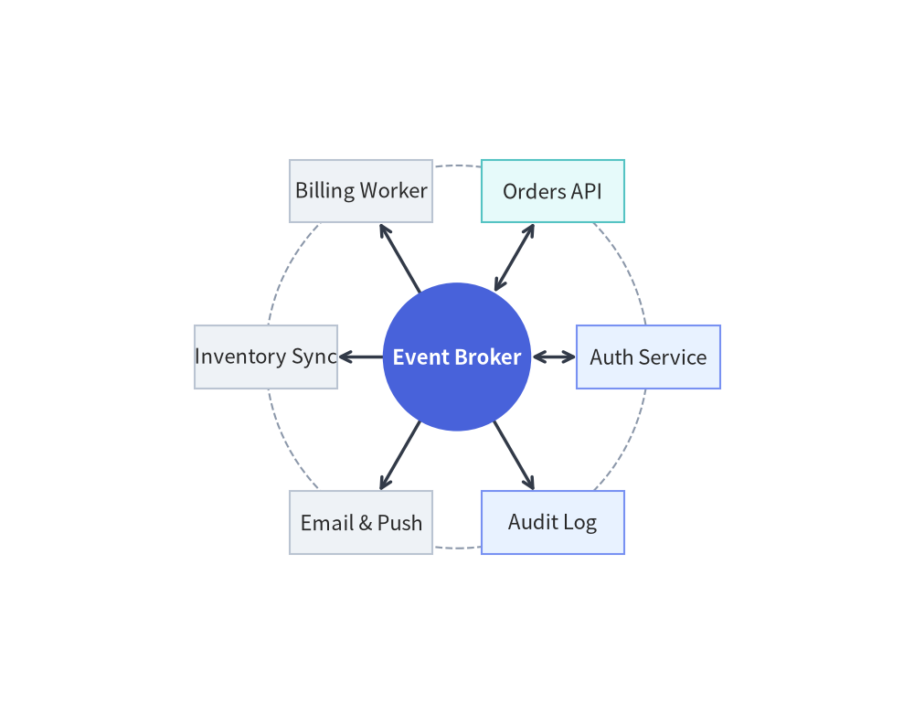
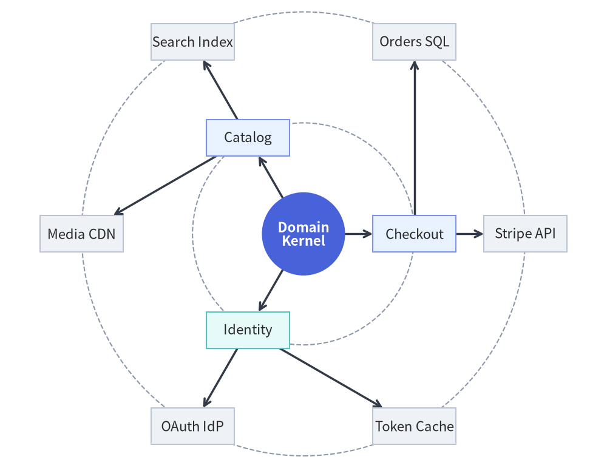
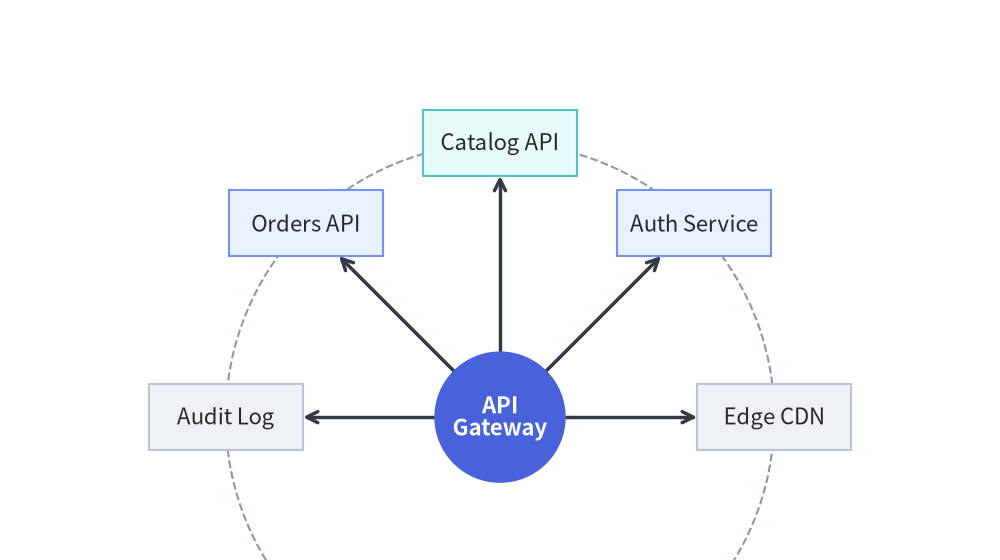

RadialGraph: Concentric Orbits & Hub-and-Spoke Topologies
RadialGraph places a central hub node at the origin (ring=0) and arranges connected nodes on concentric orbital rings (ring=1, 2, ...). Angular sectors are allocated proportionally to subtree sizes so multi-hop spokes radiate outward without crossing lines.
It is purpose-built for event-driven message meshes, Pub/Sub broker topologies, microservice hub-and-spoke networks, and concentric dependency radars.

Source Code
from drawlib.canvas import save, setup
from drawlib.graph import RadialGraph
from drawlib.icons import phosphor
from drawlib.styles import Styles
setup(width=122, height=112)
g = RadialGraph(
hub="core",
radius_step=24.5,
start_angle=35.0,
draw_ring_guides=True,
default_node_width=19.5,
default_node_height=11.0,
default_node_text_style=Styles.DarkBold.patch(text_size=10.0),
)
# Ring 0: Central Hub
g.node(
"core",
"\nEvent Hub",
shape="circle",
width=17.5,
height=17.5,
style=Styles.PrimaryFlat,
text_style=Styles.WhiteBold.patch(text_size=10.0),
)
# Ring 1: Core Services
g.spoke("core", "auth", "\nAuth API", ring=1, style=Styles.PrimaryNeutral)
g.spoke("core", "orders", "\nOrders", ring=1, style=Styles.SecondaryNeutral)
g.spoke("core", "billing", "\nBilling", ring=1, style=Styles.PrimaryNeutral)
g.spoke("core", "audit", "\nAudit Log", ring=1, style=Styles.Neutral)
# Ring 2: Outer Adapters
g.spoke("auth", "idp", "\nOAuth IdP", ring=2, style=Styles.Neutral)
g.spoke("orders", "db", "\nOrders DB", ring=2, style=Styles.Neutral)
g.spoke("billing", "stripe", "\nStripe GW", ring=2, style=Styles.Neutral)
g.spoke("audit", "siem", "\nSIEM Sink", ring=2, style=Styles.Neutral)
layout = g.draw(margin=5.0)
for nid, icon_fn, st in [
("core", phosphor.circles_three_plus, Styles.White),
("auth", phosphor.shield_check, Styles.Primary),
("orders", phosphor.cpu, Styles.Secondary),
("billing", phosphor.credit_card, Styles.Primary),
("audit", phosphor.chart_line_up, Styles.Dark),
("idp", phosphor.lock_key, Styles.Dark),
("db", phosphor.database, Styles.Dark),
("stripe", phosphor.globe, Styles.Dark),
("siem", phosphor.terminal_window, Styles.Dark),
]:
n = layout.nodes[nid]
icon_fn((n.x, n.y + (2.7 if nid == "core" else 2.0)), width=3.8, style=st)
save()
1. Constructor & .spoke() Builder API
from drawlib.graph import RadialGraph
from drawlib.styles import Styles
g = RadialGraph(
hub="core", # Central hub node ID (auto-detects highest degree if None)
center=None, # Explicit (cx, cy) origin (defaults to canvas center)
radius_step=36.0, # Radial distance between rings (auto-scales if None)
start_angle=0.0, # Starting angle in degrees (0.0 = East, 90.0 = North)
angle_range=360.0, # Total angular sweep (e.g. 360.0 full circle, 180.0 arc)
draw_ring_guides=True, # Render dashed circular orbit guides for each ring
ring_guide_style=Styles.MutedDashed,
default_node_style=Styles.Neutral,
default_node_width=22.0,
default_node_height=11.0,
)
Parameter Reference
| Parameter | Type | Default | Description |
|---|---|---|---|
hub |
str | None |
None |
ID of the central ring=0 hub node. If None, selects the node with highest connectivity. |
center |
tuple[float, float] | None |
None |
Center (cx, cy) of the concentric rings. Defaults to (width / 2, height / 2). |
radius_step |
float | None |
None |
Fixed radial gap between successive rings. Auto-scales to canvas if None. |
start_angle |
float |
0.0 |
Starting angle in degrees (0.0 = right/east, 90.0 = top/north). |
angle_range |
float |
360.0 |
Total angular sweep in degrees (360.0 for full orbit, 180.0 for semicircular fan). |
draw_ring_guides |
bool |
False |
When True, draws subtle dashed circular orbit guidelines behind each ring. |
ring_guide_style |
Style | None |
None |
Custom Style for the ring guide circles (defaults to Styles.MutedDashed). |
default_node_style |
Style | None |
None |
Default style for nodes (defaults to Styles.PrimaryFlat). |
default_node_text_style |
Style | None |
None |
Default typography style for node labels. |
default_edge_style |
Style | None |
None |
Default style for radial spoke edges (defaults to Styles.DarkBold). |
default_edge_text_style |
Style | None |
None |
Default text style for edge labels. |
default_node_width |
float |
20.0 |
Default node width in canvas units. |
default_node_height |
float |
12.0 |
Default node height in canvas units. |
Assigning Orbits with g.spoke(...) and ring=
In addition to g.node() and g.edge(), RadialGraph provides .spoke() to register a satellite node and connect it from parent in a single call:
g.spoke(
parent: str,
spoke_id: str,
label: str | None = None,
*,
ring: int | None = None,
style: Style | None = None,
text_style: Style | None = None,
shape: Literal["rectangle", "circle"] = "rectangle",
width: float | None = None,
height: float | None = None,
edge_label: str | None = None,
edge_style: Style | None = None,
arrow_head: Literal["->", "<-", "<->", "-"] = "->",
show: bool = True,
edge_show: bool = True,
) -> Node
- Automatic BFS Ring Assignment: By default (
ring=None), each node's ring index equals its shortest hop distance fromhub(ring=0for the hub,ring=1for direct neighbors,ring=2for second-hop neighbors). - Explicit Ring Assignment (
ring=int): Passring=1orring=2tog.node(id, label, ring=...)org.spoke(parent, spoke_id, label, ring=...)to pin a node to a specific concentric orbit.
2. Single-Ring Hub-and-Spoke Microservice Mesh
A single-ring RadialGraph arranges satellite services evenly around a central broker or API gateway:
from drawlib.canvas import save, setup
from drawlib.graph import RadialGraph
from drawlib.styles import Styles
setup(width=118, height=84)
g = RadialGraph(
hub="broker",
radius_step=29.0,
draw_ring_guides=True,
default_node_width=23.0,
default_node_height=10.5,
default_node_text_style=Styles.DarkBold.patch(text_size=10.5),
)
# Central Hub (ring=0) in PrimaryFlat circle
g.node(
"broker",
"Event\nBroker",
shape="circle",
width=22.0,
height=22.0,
style=Styles.PrimaryFlat,
text_style=Styles.WhiteBold.patch(text_size=10.5),
)
# 6 Spoke Microservices on Ring 1 (calm Neutral & Tinted-Neutral cards)
g.spoke("broker", "auth", "Auth Service", style=Styles.PrimaryNeutral, arrow_head="<->")
g.spoke("broker", "orders", "Orders API", style=Styles.SecondaryNeutral, arrow_head="<->")
g.spoke("broker", "billing", "Billing Job", style=Styles.Neutral)
g.spoke("broker", "inventory", "Inventory", style=Styles.Neutral)
g.spoke("broker", "notify", "Email & Push", style=Styles.Neutral)
g.spoke("broker", "audit", "Audit Log", style=Styles.PrimaryNeutral)
g.draw(margin=8.0)
save()

3. Multi-Ring Concentric Dependency Radar (ring=0, 1, 2)
By connecting second-hop spokes or explicitly passing ring=2, RadialGraph constructs multi-ring concentric architectures where inner rings represent core domain services (ring=1) and outer rings represent external adapters or storage engines (ring=2):
from drawlib.canvas import save, setup
from drawlib.graph import RadialGraph
from drawlib.styles import Styles
setup(width=122, height=112)
g = RadialGraph(
hub="domain_core",
radius_step=24.5,
draw_ring_guides=True,
default_node_width=19.0,
default_node_height=10.0,
default_node_text_style=Styles.DarkBold.patch(text_size=10.0),
)
# Ring 0: Central Domain Kernel
g.node(
"domain_core",
"Domain\nKernel",
shape="circle",
width=17.0,
height=17.0,
style=Styles.PrimaryFlat,
text_style=Styles.WhiteBold.patch(text_size=10.0),
)
# Ring 1: Application Services
g.spoke("domain_core", "checkout", "Checkout", ring=1, style=Styles.PrimaryNeutral)
g.spoke("domain_core", "catalog", "Catalog", ring=1, style=Styles.PrimaryNeutral)
g.spoke("domain_core", "identity", "Identity", ring=1, style=Styles.SecondaryNeutral)
# Ring 2: External Infrastructure Adapters
g.spoke("checkout", "stripe", "Stripe API", ring=2, style=Styles.Neutral)
g.spoke("checkout", "orders_db", "Orders SQL", ring=2, style=Styles.Neutral)
g.spoke("catalog", "elastic", "Search Idx", ring=2, style=Styles.Neutral)
g.spoke("catalog", "cdn", "Media CDN", ring=2, style=Styles.Neutral)
g.spoke("identity", "oauth", "OAuth IdP", ring=2, style=Styles.Neutral)
g.spoke("identity", "redis", "Token Cache", ring=2, style=Styles.Neutral)
g.draw(margin=5.0)
save()

4. Semicircular Dependency Fan (angle_range=180.0, start_angle=0.0)
Instead of a full 360.0 degree orbit, you can restrict spokes to a semicircular or quadrant fan using start_angle and angle_range (along with an explicit center=(cx, cy) and radius_step):
from drawlib.canvas import save, setup
from drawlib.graph import RadialGraph
from drawlib.styles import Styles
setup(width=124, height=66)
g = RadialGraph(
hub="gateway",
center=(62.0, 15.0),
radius_step=36.0,
start_angle=0.0,
angle_range=180.0,
draw_ring_guides=True,
default_node_width=22.0,
default_node_height=10.5,
default_node_text_style=Styles.DarkBold.patch(text_size=10.5),
)
# Hub anchored near the bottom center
g.node(
"gateway",
"API\nGateway",
shape="circle",
width=21.0,
height=21.0,
style=Styles.PrimaryFlat,
text_style=Styles.WhiteBold.patch(text_size=10.5),
)
# 5 downstream services fanned across the upper 0°..180° arc
g.spoke("gateway", "cdn", "Edge CDN", style=Styles.Neutral)
g.spoke("gateway", "auth", "Auth API", style=Styles.PrimaryNeutral)
g.spoke("gateway", "catalog", "Catalog API", style=Styles.SecondaryNeutral)
g.spoke("gateway", "orders", "Orders API", style=Styles.PrimaryNeutral)
g.spoke("gateway", "audit", "Audit Log", style=Styles.Neutral)
g.draw(margin=6.0)
save()

5. Best Practices
- Enable
draw_ring_guides=Truefor Multi-Ring Graphs: Subtle dashed orbit circles make concentric hierarchy levels (ring=1vs.ring=2) immediately legible at a glance. - Use
shape="circle"for the Central Hub: Making the center hub a circle (shape="circle",width=24.0,height=24.0) withStyles.PrimaryFlatcreates a natural visual anchor for radial spokes. - Give Outer Rings Generous Canvas Margin: Pass
margin=16.0(or higher) tog.draw(margin=16.0)so rectangular cards at the top, bottom, left, and right extremes of the outer ring have comfortable breathing room.